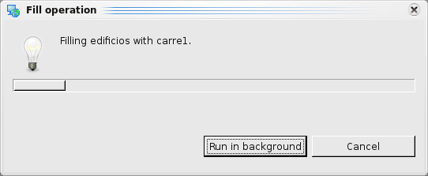

Fill Operation¶
Creates a new features using the boundary of polygons and the provided LineStrings
The Fill Operation takes the features from the Source layer and uses the LineString features from the second layer to fill them.
The result of the Fill Operation could be stored on a new layer, on an existent layer or on the previously used source layer.
Sample Usage¶
On this example we are going to do a fill operation with the polygon layer edificios.shp and the lineString layer carre1.shp and the resultant features will be added to the edificios.shp layer.
Figure 1. Before operation.
Go to the Spatial Operations View, and select Fill from the Operations list. The Fill Operation‘s specific input options will show up.
Now is time to indicate the operation’s inputs, as shown in Figure 2:
Select the Source Select the desired Polygon or MultiPolygon layer to use as border.
Select the Using Select the LineString or MultiLineString layer that will fill the new created polygon.
Select the Result At the Result Layer drop down, a tentative Layer name will be proposed for the layer the operation will create. You can change the name or select an existing Layer where to store the results. This combo will only load existent Polygon or MultiPolygon layer.

Figure 2. Define input and target layers.
Perform the operation Once the input and target layers are defined, press the Perform button at the Spatial Operations View tool bar. The operation will begin processing and its progress will be shown up on a progress dialog, as shown in Figure 3. The operation may take a while to complete, depending on the amount and complexity of the input geometries.
Figure 3. Progress dialog.
Shows the newly created Layer (Fill_1) added to the map, with the Features resulting of applying the Fill operation between the Source layer and the Second layer.
Figure 4. Result Layer.